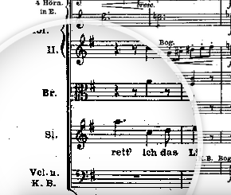

Ton, Bild, Text und Notenmaterial - der Online Partitur Player (OPP) erlaubt es, alle Aspekte eines großen musikalischen Werks (Opern, Symphonien etc.) auf einen Bick zu erleben. Sein Repertoire wird ständig erweitert. Synchron zu einer Video-Aufnahme laufen die Seiten der Partitur automatisch mit, ohne dass ein manuelles Umblättern nötig ist. Ob aus Genuss oder zwecks Studium - dieses Tool ermöglicht eine neue Perspektive auf die Musik und erweitert den Blick für Details. Das Projekt ist frei, der Quellcode offen, jede Mitarbeit ist erwünscht!
Ton, Bild, Text und Notenmaterial - der Online Partitur Player (OPP) erlaubt es, alle Aspekte eines großen musikalischen Werks (Opern, Symphonien etc.) auf einen Bick zu erleben. Sein Repertoire wird ständig erweitert. Synchron zu einer Video-Aufnahme laufen die Seiten der Partitur automatisch mit, ohne dass ein manuelles Umblättern nötig ist. Ob aus Genuss oder zwecks Studium - dieses Tool ermöglicht eine neue Perspektive auf die Musik und erweitert den Blick für Details. Das Projekt ist frei, der Quellcode offen, jede Mitarbeit ist erwünscht!
Mögliche Einsatzgebiete des Online Partitur Players:
- für Lehrer im Schul- und Hochschulunterricht zur Vermittlung von analytischen Vorgehensweisen im Umgang mit Partituren und vielschichtiger Musik.
- für Studenten, Musik- und Theaterwissenschaftler als bequemer Helfer bei der Analyse von Text, Notenmaterial und szenischer Umsetzung.
- für Musikkenner, Begeisterte und Interessierte zur Durchführung persönlicher Studien, zur Erweiterung des musikalischen Horizonts, zum multimedialen und vielschichtigen Genuss von Kunst und Kultur etc.
 Audio, video, text and full score - the Online Partitur Player (OPP) allows you to get all aspects of a musical piece at a glance. Its repertoire is constantly being expanded. While watching the recording the full score automatically follows the music making manual page turns unnecessary. You're cordially invited to take part in this open source project!
Audio, video, text and full score - the Online Partitur Player (OPP) allows you to get all aspects of a musical piece at a glance. Its repertoire is constantly being expanded. While watching the recording the full score automatically follows the music making manual page turns unnecessary. You're cordially invited to take part in this open source project!
Repertoire
... Projekt steht noch am Anfang, neue Werke folgen regelmäßig...Richard Wagner Die Walküre
Akt I
Akt II
Akt III
Richard Wagner Tristan und Isolde
Akt I
Akt II
Akt III
Features
Wichtigstes Ziel dieses Tools ist es, das audiovisuelle Erleben eines musikalischen Werks um die erhellende Einsicht in das Notenmaterial zu erweitern. Bisher war es dafür nötig, entweder die Partitur in Papierform zu besitzen und mitzublättern oder umständlicherweise in sperrigen PDF-Dokumenten mitzuscrollen. Für eine ausgewählte, aber wachsende Anzahl von Werken gehören diese Umständlichkeiten der Vergangenheit an. Der Online Partitur Player lässt die Partitur simultan zur Aufnahme mitlaufen und garantiert durch flüssige Animation des Seitenwechsels einen kontinuierlichen Lesefluss (per Schaltfläche deaktivierbar).
Musik und Bild sind mithilfe eines Youtube-Videos über den standardmäßigen Youtube-Player eingebunden, der sich auf Wunsch über die Schaltfläche Toggle player verbergen lässt, um ggf. den Blick auf die Partitur zu verbessern. Gleichzeitig dient er mit seiner Zeitleiste as primäres Navigationsinstrument zur Auswahl der Stelle im Stück. Bei Zeitsprüngen blättern die Noten instantan zur eingestellten Position.
Damit die beiden angezeigten Notenseiten der Partitur in lesbarer Größe dargestellt werden können, ist ein normaler Desktop-Bildschirm ausreichend. Insbesondere auf kleinen Geräten kann daher die über die Schaltfläche Toggle lens aktivierbare Bildschirmlupe abhelfen und ermöglicht ein lokales Heranzoomen an die Notensysteme.
Der Hauptindikator ist die in der linken oberen Ecke des Bildschirms positionierte Abspielleiste. Auf ihr finden sich neben der aktuellen Seitenzahl und dem Zeitfortschritt zwei dynamische Balken. Der rote Balken visualisiert die bis zum nächsten Seitenwechsel verbleibende zeit, der blaue steht für die Position im gesamten Werk.
Der Player ist durch Aufrufen des php-Skripts player.php erreichbar. Diesem muss über GET der Parameter opus übergeben werden, der das abzuspielende Werk angibt. Jedes Werk im Repertoire des Players besitzt hierfür einen eindeutigen Code, der zum II. Akt der Walküre gehörige lautet beispielsweise walkuere2. Um also dieses Werk unter Benutzung des Partitur Players abzuspielen, ist die Adresse http://julianibus.de/partitur/player.php?opus=walkuere2 anzuwählen.
Zur Funktionsweise des Players: Neben der zu PNG-Abbildungen konvertierten Partitur und dem Youtube-Video-Code benötigt das Tool für ein Werk nur eine einzige Datei, die die zu jeder einzelnen Notenseite gehörige Zeitposition im Video enthält. Sie ist so aufgebaut, dass der zur n-ten Seite gehörige Zeitcode in der n-ten Zeile der Datei steht und demzufolge beispielsweise so aussieht:
0
211
307
377
423.5
461
...
Allein auf Grundlage dieser simplen Daten, die für jedes Werk, das in das Repertoire aufgenommen werden soll, manuell durch Menschenhand angefertigt werden müssen, baut der vollständige funktionale Kern des Tools auf. Der Vorteil dieser Struktur liegt in seiner unübetrefflichen Einfachheit und Kompaktheit, der Nachteil ist die Abhängigkeit des eingespeicherten Werks von dem verwendeten Youtube-Video und die Nichtübetragbarkeit auf andere Aufnahmen.